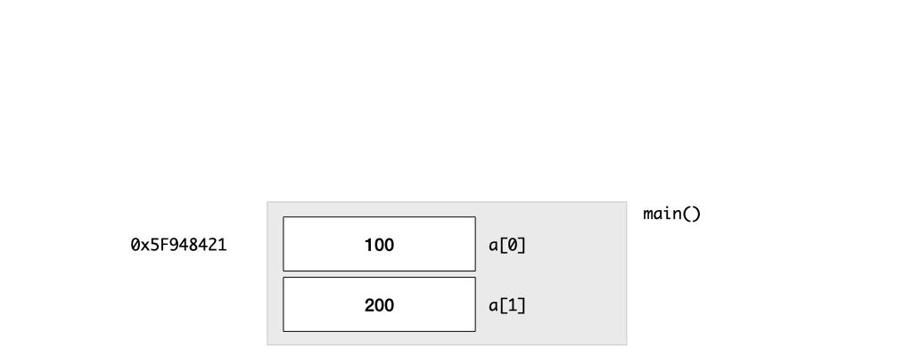
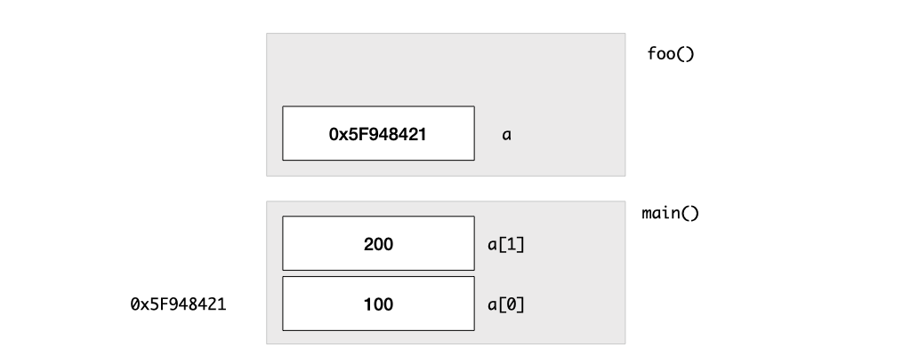
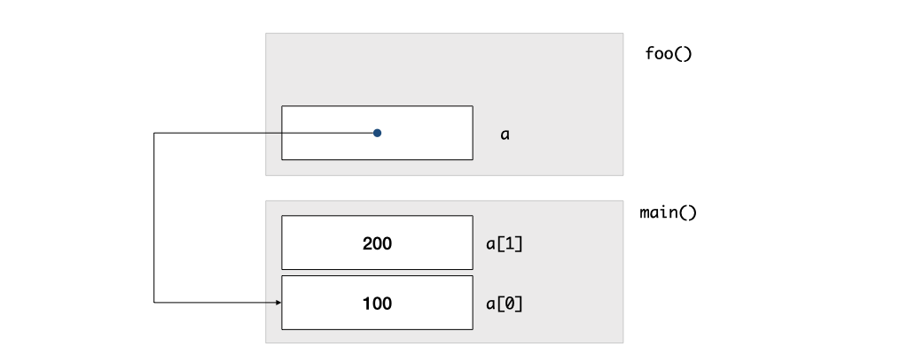

Unit 14: Fixed-Length Array
Learning Objectives
After this unit, students should:
- understand the concept of a compound data type
- be able to manipulate arrays in C, including:
- declaring an array of a particular type and length
- accessing the elements within an array
- be aware that when declaring arrays, they are done so with a fixed-length
- be able to define an array as a function parameter
- be aware of the difference of pass by value and pass by reference, and that arrays, as parameters correspond to the latter, and consequently, the need to also indicate the length of an array as another parameter
- be aware that we cannot change the length of an array, only declare a new one of a different length
- be aware that we may check the length of an array using the
sizeofoperator - be aware that VLA should be avoided in general, and is banned in CS1010
Your First Compound Data Type
We now look at the first of the two compound data types in C -- arrays.
An array is a data type that can hold one or more values. An array variable can only store values of the same type \(T\). We say that the array variable is an array of \(T\). For instance, we can declare a variable list to be an array of long, in which case, list can hold one or more long values.
There are three different types of arrays in C:
- A fixed-size array is an array in which the size is known during compile time.
- A variable-length array (VLA) is an array in which the size is variable (known only during run-time) and is allocated on the stack.
- A dynamically allocated array is an array in which the size is variable (known only during run-time) and is allocated on the heap.
In this unit, we will focus on fixed-size arrays. We will explain why VLA should not be used. We will leave our discussion of dynamically allocated arrays to later units.
Array Declaration
Let's first look at how we can declare an array variable. The declaration syntax for an array in C takes the following form:
1 | |
We use the square bracket [ and ] to indicate that the variable list is an array. The number 10 indicates that marks holds 10 long values. The size of the array must be an integer value, not a variable.
Just like any other local variables, declaring an array does not initialize it. An uninitialized array contains whatever values happened to be in the memory at that time.
Accessing the Array Elements
We can access the array elements using the index of the element, starting from 0. For instance, to initialize the first three elements of a list to 1, 2, and 4, respectively, we can write:
1 2 3 4 | |
Same syntax, two different meanings
Beginners tend to confuse with the following:
1 2 | |
list[10] appears twice but it has two different meanings. In the first line, we are declaring an array called list of size 10. In the second line, we are using the array list, and accessing the element with index 10 (which is not valid).
Array Initialization
Initializing a large array using the method above could be tedious. Alternatively, we can initialize an array using a list of values when we declare the array.
1 | |
If we do not specify a value during initialization, it will be set to 0 by default.
1 2 | |
Note that, after the declaration, we can no longer use this technique to reinitialize or initialize the array.
1 2 | |
Example: Array as Lookup Table
One useful application of a pre-initialized array is to use it as a lookup table. Consider the problem of checking if a given month and day is a valid pair. One is to write the code as follows:
1 2 3 4 5 6 7 8 9 10 11 12 13 14 15 | |
The long chain of logical conditions are hard to read and prone to errors.
An alternative is to store the number of days in a month in a look-up table. We do so by declaring an array with twelve elements and storing the number of days in month \(i\) in array position indexed \(i-1\).
1 2 3 4 5 6 7 8 9 10 11 12 13 14 15 16 17 18 19 20 21 | |
This approach separates the data (number of days in a month) from the control flow. In cases where the data may change, separating the data from the control makes the code easier to maintain and update to changing requirements.
Passing Array as Parameter to Functions
C supports several syntaxes for passing an array as a parameter into a function. The following function declarations mean the same thing.
a. Passing in the array with [, ] and the constant size of the array.
1 2 3 | |
b. Passing in the array with [, ]
1 2 3 | |
Option (a) explicitly tells the reader of the code that this function expects an array called list of size 10. Option (b) passes both the length of the array len and the array list to the function. Note that len is not explicitly related to list in C, and would have to depend on the comments of the code to tell the reader what len is for.
A third way of passing in an array
For (b), we could also write it as:
1 2 3 | |
This way, the code informs the reader that len represents the size of the array. While this code is more readable, it unfortunately gets treated as a variable-length array and triggers a warning by clang. As such, we avoid using this syntax in CS1010.
To pass in an array as an argument, we just need to specify the name of the array:
1 2 | |
Example: Finding Max
We can now revisit the flowchart for \(max\) and write the function in C:
1 2 3 4 5 6 7 8 9 10 | |
Array is Passed By Reference
An array variable is treated differently than a variable of other types in C in several ways. One of these differential treatments has caught many new programmers by surprise -- it violates the pureness of functions. Whatever happens in the function no longer just stays in the function. Let's consider the following example:
1 2 3 4 5 6 7 8 9 10 11 | |
If foo is a pure function with no side effects, then calling foo should not change a. But if you run the code above, you will see that a[0] has changed to 200!
When we pass a into foo, what do we push onto the stack? Unlike other variable types, we do not copy the whole array onto the stack. One reason for this is that an array can be huge -- copying the whole array onto the stack for every function call with the array as an argument can be slow. Thus, in C, when an array is passed as an argument, only the memory address of the array is copied onto the stack.
The following figures illustrate this point. First, let's see how an array is laid out in the memory. When we declare an array a with two elements, the appropriate space is reserved on the stack. The elements of the array are stored consecutively in the memory. This implies, that, it is sufficient to know where the first element of the array is stored. With that memory address, we can find out where the rest of the elements in the array are, and by reading the content of that memory location, find out what their values are. This "trick" is what allows C to pass an array into a function efficiently.

When we call foo, we push the memory address of the array (i.e., of the first element of the array), on the stack. With this memory address, foo can now read the elements of the array a[0] and a[1], by accessing the memory of the array on the stack frame of main. If foo modifies to the array, then the array on the stack frame of main is updated as well.

This mechanism of passing arguments into a function is called "pass by reference", as opposed to "pass by value", in which we make a copy of the variable on the stack.
Mitigating Impurity with const
C does not give us any choice but to pass in an array by reference, making our job to reason about the behavior of our code difficult. Every time we pass an array into a function, we would have to read through the code of that function, to ensure that the array is not modified. Fortunately, C provides a mechanism to make our life better: the const keyword.
The const keyword is a qualifier that indicates that a variable is read-only, and therefore cannot be modified. A good programmer should always communicate to the reader of the code if a call-by-reference parameter will be modified or not. A better way to write our max is:
1 2 3 4 5 6 7 8 9 10 | |
Here, we are communicating to whoever reading our code that length and the elements of list will not be modified anywhere in our code. Adding const will also help us to avoid bugs in case we had a typo in our code.
Consider a buggy version of max is as follows, where the programmer uses one-letter variable names and then shoots themself in the foot by mixing up k and m. However, if the programmer already qualified k with the const keyword, the code wouldn't compile, avoiding hours of hair-pulling debugging sessions.
1 2 3 4 5 6 7 8 9 10 | |
Pointers
A more visual way to illustrate the fact that a memory location contains the memory address of another variable is to draw an arrow to point from the location storing the address of the variable to the location storing the variable.

For this reason, in C, a variable that stores a memory address is called a pointer. We will examine this in more detail in Unit 15, but for now, we will just introduce the * notation in C. This notation is overused in C and often confuses. You have seen how * is used for multiplication. We will now use * to indicate that a variable is a pointer, by putting it in front of the name of the variable.
For instance, the line below declares a variable named address that contains the memory address of a double value.
1 | |
Common Bug
It is possible to write as
1 | |
1 | |
from_addr and to_addr are of type double*. But C treats to_addr as a double, not an address of a double! In any case, if you follow the CS1010 style, you shouldn't be declaring two variables in one line.
We can use * to dereference a pointer, but let's keep that for another day, and stick to using * in a variable declaration for now.
Array Decay
We have seen in the above, how calling foo(a) would cause the address of array a to be passed into the function foo. This behavior is rooted in the principle in how C treats the name of an array: array decay. Once you understand this concept, all the special treatments C makes to array would fall into place!
This is how array decay works. In C, the name of the variable of an array is treated differently from a non-array variable. If we declare an array
1 | |
Then, any reference to name is a synonym for the pointer to the first element of the array name. This explains why when we call foo with a, it is the address of the first element of a that is pushed onto the stack.
1 2 | |
This also explains why we have several options when declaring an array as a parameter to a function. All three options below
1 2 | |
are equivalent to:
1 | |
or
1 | |
since we are just passing in the pointer to a long variable. Using long *x is a perfectly valid (and common) C syntax for passing in an array, it is just not as readable since we can't tell if x is meant to be just an address to a variable, or meant to be an array.
Array decay works everywhere, not just during argument-passing to a function.
Suppose we write
1 2 3 4 5 6 7 8 | |
Line 4 above is equivalent to comparing the memory addresses of the first elements of a and b and therefore is always false (since the array elements do not have the same memory address).
Line 8 above is equivalent to assigning the memory address of the first element of a to the memory address of b, which is not allowed. We cannot change the memory address of a variable since this is determined by the OS.
Returning Array from a Function
Now that we have a better understanding of how we can pass an array as a pointer into a function, let's see how we can return an array from a function. Exploiting array decay, we can return the array as a pointer from a function. Consider the square function that computes the square of every element in the list:
1 2 3 4 5 6 7 | |
We can call the function like this:
1 2 3 | |
If you examine the content of a2, you will find that a2 correctly contains the square of the input array a. We are, however, passing in a as a reference, the code snippet above modifies a as well! One might argue that it is pointless to return an array in this case, since we could have just defined the function as a void function:
1 2 3 4 5 6 | |
and assign a to a2 (if we want to store the squared list in a2).
1 2 3 4 | |
Is there a way then, to keep list unmodified, while returning a "new" array? You might be tempted to do this:
1 2 3 4 5 6 7 8 | |
This is wrong for two reasons:
- We are declaring an array
squaredwith a variable size on the stack. This is called a variable-length array, or VLA. VLA is banned in CS1010. Even outside of CS1010, VLA should be used with extreme care. A VLA is allocated on the stack, which typically has very limited memory. If the stack runs out of memory, your program would crash! The situation is worse if the size of the VLA is _read as input from the users -- this implies that an external user could enter a malicious input to crash your program._ - By returning
squared, we are returning the memory address of an array allocated on the stack. Recall that when a function exits, the memory allocated to it on the stack is reclaimed and reused. Thus, the arraysquaredno longer exists, and the content of the returned array is now undetermined.
There is a right way to do this involving allocating memory on the heap, but we will explore it in a later unit. But, in short, at this point, you haven't learned enough yet to have a correct and meaningful way to return an array from a function.
Array Index Out of Bound
A common bug when we work with arrays is accessing a location beyond what is allocated to the array. Unlike other languages like Java, which checks the bound for you, C does not. So we could write the following code, and it would compile perfectly.
1 2 3 4 5 6 7 | |
Running this, however, would lead to memory corruption, since we are writing to a[10] (the 11-th element) but we only asked for 10 elements for the array a. So we are writing to a memory that we are not supposed to and thus causing your program to behave incorrectly. Running the program above would lead to the following output1:
1 2 3 | |
Similarly, reading from a memory location that we are not supposed to could lead to a misbehaving program. You have seen this in Problem 2.1(d).
Other Facts About Arrays
Skipping Elements During Initialization
If we have a large array, and we want most of it to be initialized to 0, and only some non-zero, we can use element designators, putting the index of the element we want to initialize to non-zero in square brackets [ and ].
1 | |
This statement initializes vector[0] to 1, vector[5] to 2, vector[6] to 3, and vector[99] to -1. The rest of the elements will be 0.
Skipping the Size in Declaration
If you supply an initialization list, the number of elements already indicates the length to the compiler, so you can skip the length.
1 | |
This makes it easy to add or remove items from the array, without having to remember to keep the array length consistent.
Determining the Number of Elements in the Array
C provides a sizeof operator, which returns the number of bytes allocated to a type. We can use sizeof long, for instance, to determine the number of bytes allocated to long on a platform. We can also use sizeof of a variable instead of the type. This becomes useful to determine, programmatically, the length of an array (esp if the array length is skipped in the array declaration). We can calculate the number of elements in marks with
1 2 | |
Problem Set 14
Problem 14.1
Consider the snippet below.
1 2 3 4 5 6 7 8 9 10 11 12 13 14 15 16 17 | |
a. Show the content of the stack at Line A if the program above is executed.
b. What is the content of array a at Line B?
Problem 14.2
Consider the snippet below.
1 2 3 4 5 6 7 8 9 10 11 12 13 14 15 16 17 | |
a. Does the code compile cleanly?
b. Show the content of the stack at Line A if the program above is executed.
c. What is the content of array a at Line B?
-
You will see this output only if your code is compiled with
-fsanitize=boundsflag. ↩